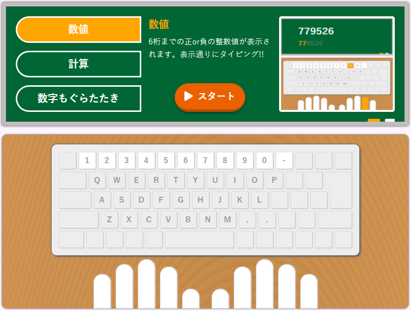
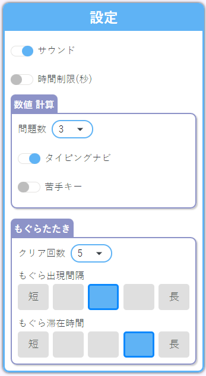
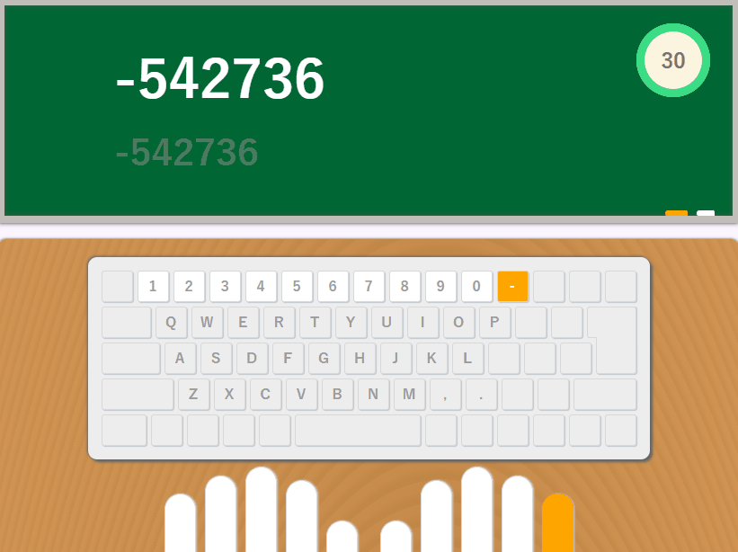
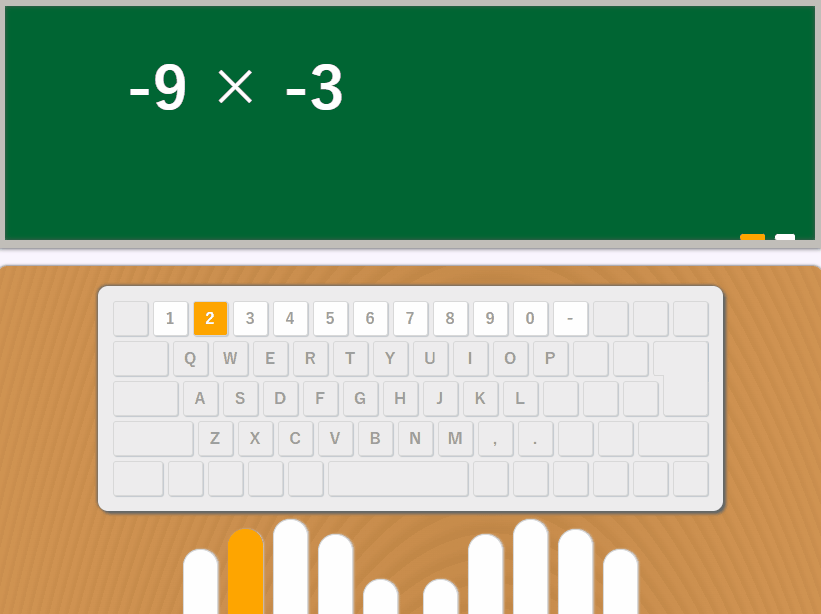
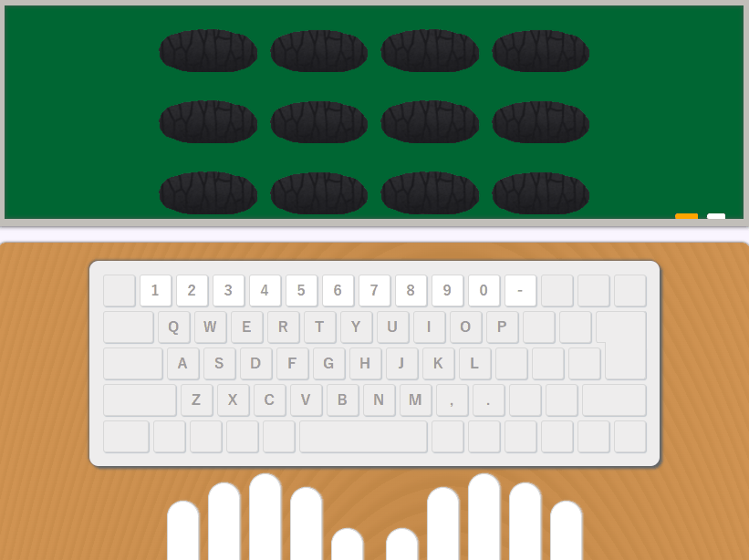
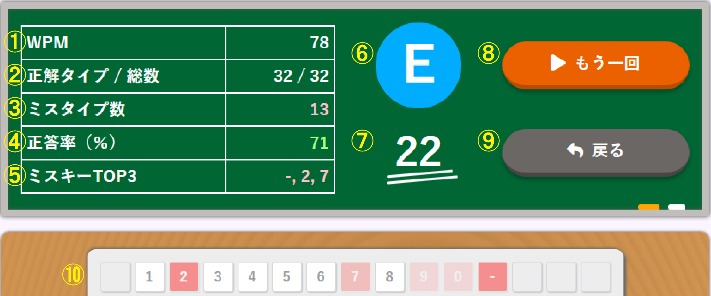
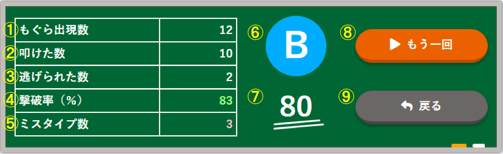

数字タイピング
概要
数字キーのタイピング練習アプリケーションです。
PCから閲覧、キーボードを使用して実行することを想定して作成しています。
公開URL
目的
- JavaScriptの勉強（jQUeryを使用しない）
- HTML、CSSの勉強
- ゲーム感覚でタイピング練習できるアプリケーション作成
- 数字キーを正確に速くタイピングできるように鍛えたい
使用言語
- Javascript
- HTML
- CSS
開発環境
- Windows10
- Visual Studio Code
- git(SourceTree使用)
機能一覧
- トップ画面
- 設定画面
- 問題画面
- 数値モード
- 計算モード
- もぐらたたきモード
- 結果画面
使用方法
トップ画面
数値、計算、もぐらたたきの3つのモードへの切替、各モードの説明テキスト、キーボードと対応指が表示されます。
設定画面
共通
各モード共通の設定項目として「サウンド」、「時間制限(秒)」があります。サウンドはミスタイプ時の音、もぐらたたきモードの叩く音の有無を設定できます。時間制限は全モードでの時間制限タイマーの有無、時間の秒数を設定できます。
数値 計算
数値、計算モードにて、「問題数」、「タイピングナビ」、「苦手キー」を設定できます。「問題数」はクリアまでの問題数を設定できます。「タイピングナビ」はタイピングすべきキーの表示と対応する指の表示の有無を設定できます。「苦手キー」は設定したキーが問題に含まれるように設定できます。
もぐらたたき
もぐらたたきモードにて、「クリア回数」、「もぐら出現間隔」、「もぐら滞在時間」を設定できます。「クリア回数」はクリアまでのもぐらのたたく回数を設定できます。「もぐら出現間隔」、「もぐら滞在時間」は5段階で長さを選択できます。
問題画面
数値モード
6桁までの正 or 負の整数が表示されます。表示された通りに数字キーまたはマイナスキーをタイピングして下さい。設定した問題数が終了すると結果画面が表示されます
タイピングナビが設定されている場合はタイピングキーと対応指がオレンジ色になります。
時間制限が設定されている場合はタイマーが表示され、タイマーの数値が0になると強制的に結果画面が表示されます。
計算モード
3桁までの足し算と引き算、2桁までの掛け算の計算問題が表示されます。計算結果をタイピングして下さい。設定した問題数が終了すると結果画面が表示されます。
タイピングナビが設定されている場合はタイピングキーと対応指がオレンジ色になります。
時間制限が設定されている場合はタイマーが表示され、タイマーの数値が0になると強制的に結果画面が表示されます。
もぐらたたきモード
0~9までの数値がもぐらたたきのように出現します。出現している時にタイピングすることでもぐらたたき成功判定となります。別のキーをタイピングまたは数値が消えてしまったら失敗判定となります。叩いた回数が設定したクリア回数に達すると結果画面が表示されます。
時間制限が設定されている場合はタイマーが表示され、タイマーの数値が0になると強制的に結果画面が表示されます。
結果画面
数値 計算モード
- WPM：1分間あたりの正解タイプ数
- 正解タイプ数/総数：正しくタイピングした数と出題された問題の総タイピング数
- ミスタイプ数：ミス判定されたタイピング数
- 正答率（%）：正解タイプ数 / (正解タイプ数 + ミスタイプ数) * 100 (※小数点以下切り捨て)
- ミスキーTOP3：ミスした回数が多い順に3つ表示
- ランク：スコアに応じたランク(S~F)
- スコア：(正答率 - ((1 - (正解タイプ数 / 総数)) * 100) ) * (WPM / 300) (※小数点以下切り捨て、最大100、最小0)
- もう一回ボタン：もう一回同じモードで問題を開始
- 戻るボタン：トップ画面へ戻る
- ミスキー：ミスした回数が多いほど濃く、少ないと薄い赤色で表示
もぐらたたきモード
- もぐら出現数：もぐらが出現した数
- 叩けた数：もぐら出現時に正しくタイピングした数
- 逃げられた数：もぐらが逃げてしまった数
- 撃破率（%）：叩けた数 / もぐら出現数 * 100 (※小数点以下切り捨て)
- ミスタイプ数：ミス判定されたタイピング数
- ランク：スコアに応じたランク(S~F)
- スコア：撃破率 - ミスタイプ数 (※最大100、最小0)
- もう一回ボタン：もう一回同じモードで問題を開始
- 戻るボタン：トップ画面へ戻る